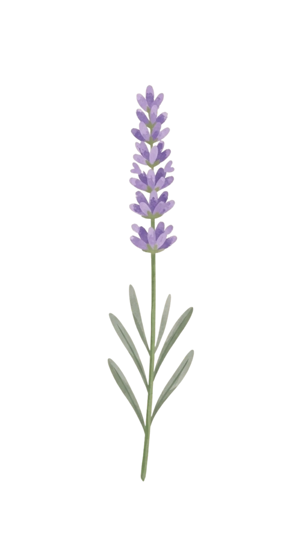

A Forever Bouquet for Aliya



"Bunga di luar sana bisa layu, tapi bunga yang ini bakal mekar terus buat nemenin kamu."

Our Journey
Kepingan Momen Kita
Usap foto untuk melihat cerita di baliknya ✦
Happy Birthday Sekali Lagi, Sayang
Buket bunga digital kecil ini dibuat spesial untuk menemani hari bahagiamu.